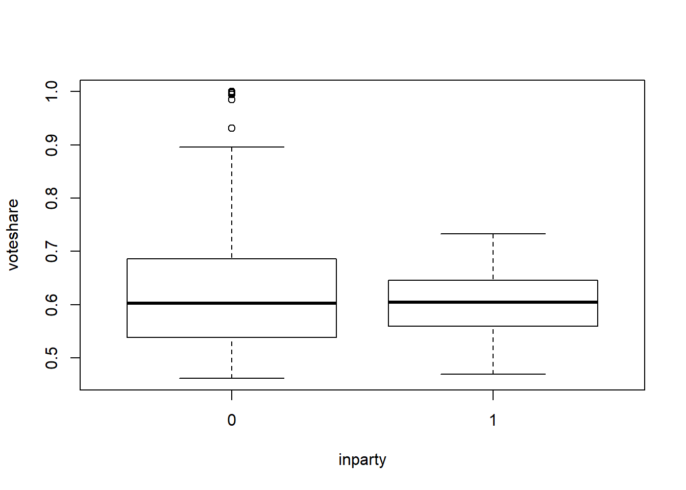

4 Files, For Loops, and Functions
4.1 The working directory
First we want to change the working directory. This is the folder where R will save and look for data by default (although you can always override this)
Note that the file path (in Windows at least) requires slashes. You can either use two back slashes to separate folders or one forward slash.
setwd("~/Dropbox/Classes/R Programming")
## For Windows, will need to be something like
setwd("C:\\Documents and Settings\\Jacob Montgomery\\My Documents\\RWork")
## or
setwd("C:/Documents and Settings/Jacob Montgomery/My Documents/RWork")
## or
setwd(file.path("C:", "Documents and Settings", "Jacob Montgomery", "My Documents", "RWork"))4.2 Input and output
Now let’s save our newly created dataset
dump("voting.data", "voting.data.R") # inputs are string. Note that you must put the *.R in yourselfYou might also want to save multiple objects
dump(c("vap", "tv"), "voting.data.vectors.R")
dump(list=objects(), "everything.R")
## an alternative we can just use the command
save.image("everything.RData") # saves an image of your current workspaceNow we can clear our wokspace, and load these objects
To read/write dataframes from/to a csv (comma separated values) file, the following commands will be useful
votes.06<-read.csv("~/Dropbox/Classes/R Programming/R Scripts/VotingData2006.csv", header=T)
write.csv(votes.06, file="VD06.csv")Tips: All of the functions for reading in data are actually using the scan() function. No matter how crazy your data look, you can always read it into R by clever use of scan().
4.3 if, else, ifelse
The basic syntax for an if call is
- The inputs in the parentheses needs can be anything that returns a logical.
- You can put anything you want in the braces
The simplest examples possible.
## [1] "I got here"You can combine this with else
if(condition) {
commands to run when condition is TRUE
} else { # notice that these are on the same line
commands to run when the condition is FALSE
}## [1] "X is larger than 2"But this set up will not play well with vectors. It runs, but is confusing
## Warning in if (c(3, 1) > 2) {: the condition has length > 1 and only the first
## element will be used## [1] "This won't work"The ifelse command works nicely with vectors, but syntax is different. This command is equivalent to a ternary in other languages if you’re familiar with that term.
## [1] "no" "yes"WARNING
If your outputs are vectors ifelse will work element-wise
## [1] "no1" "yes2"## [1] "yes1" "no2"- Note that the curly braces are not technically necessary if you have only a one line command
- BUT you should use them anyway so someone can read your code!
## [1] 64.4 repeat and while
- Repeat just repeats commands in the braces until it sees a
BREAKcommand - If you don’t include
BREAKyour computer will be in an infinite loop. - Save your work before using!
- Or maybe just don’t use it
# make a blank plot with the limits set by those vectors
plot(NULL, xlim=c(0, 100), ylim=c(0, 1), xlab="x", ylab="1/x")
x = 1
repeat {
y = 1 / x
x = x + 1
points(x, y)
if (x == 100) {
break
}
}
A while loop is just a repeat, where the break condition is specified at the top
plot(NULL, xlim=c(0, 100), ylim=c(0, 1), xlab="x", ylab="1/x")
x = 1
while(x < 100) {
y = 1 / x
x = x + 1
points(x, y)
}
4.5 for loops
- The
forcommand is probably the most common flow control option. - It has three basic parts:
- An object name that will be used in the following commands
- A vector that we will “loop over”
- Commands that will be executed for each value of the vector
for (monkey in c("Spider", "Howler", "Rhesus")) {
## Each loop does the equivalent of: monkey = "Spider" or monkey = "Howler" or ...
print(monkey)
}## [1] "Spider"
## [1] "Howler"
## [1] "Rhesus"Or more commonly
## [1] 1
## [1] 2
## [1] 3
## [1] 4
## [1] 5
## [1] 6
## [1] 7
## [1] 8
## [1] 9
## [1] 10## for loops are very useful in many situations
plot(NULL, xlim=c(0, 100), ylim=c(0, 1))
for (i in 1:100) {
points(i, 1 / i)
}
4.5.1 next and break
Sometimes you might not want to execute the commands for every element in the vector
use the next command to skip (you can also use the break)
some.odds = NULL
for (i in 1:200) {
if (i %% 2 == 0) {
next
}
some.odds = c(some.odds, i)
}
some.odds## [1] 1 3 5 7 9 11 13 15 17 19 21 23 25 27 29 31 33 35
## [19] 37 39 41 43 45 47 49 51 53 55 57 59 61 63 65 67 69 71
## [37] 73 75 77 79 81 83 85 87 89 91 93 95 97 99 101 103 105 107
## [55] 109 111 113 115 117 119 121 123 125 127 129 131 133 135 137 139 141 143
## [73] 145 147 149 151 153 155 157 159 161 163 165 167 169 171 173 175 177 179
## [91] 181 183 185 187 189 191 193 195 197 199Technically, you don’t have to be so formal. But the indenting and braces are there for the protection of your future self.
## [1] 1
## [1] 2
## [1] 3
## [1] 4
## [1] 5
## [1] 6
## [1] 7
## [1] 8
## [1] 9
## [1] 104.6 Functions
4.6.1 The basics
- Use the ‘function’ command and assign it to an object
- If you need, specify the expected inputs
- Do some stuff
- Return something (and only one thing) to the global environment.
Here’s an example:
countThrees = function(vector) {
threes <- 0
for(i in vector) {
if(i == 3) {
threes <- threes + 1
}
}
return(threes)
}
v <- c(1, 2, 3, 4, 3, 3)
countThrees(v)## [1] 3What would happen if we passed in one number instead of a vector?
## [1] 0## [1] 1Or a matrix?
## [1] 1If you want to return multiple values in R, you must put them in a vector or list and return the data structure instead.
Remember that a list is essentially a vector that can contain different data types.
Sometimes a function will return a value, but other times it will just execute a command like print or plot.
4.7 Setting defaults
You can set default values for some of your arguments or all of them
gaga.equation = function(num.rah=2, num.ah=3, num.ga=2, num.la=2, num.oo=1) {
rahs = paste(rep("RAH", num.rah), collapse=", ")
ahs = paste(rep("AH", num.ah), collapse=", ")
gas = paste(rep("GA", num.ga), collapse=", ")
oo = paste(rep("OO", num.oo), collapse=", ")
las = paste(rep("LA", num.la), collapse=", ")
paste(rahs, ",", ahs, "! ROMA, ROMAMA!", gas, ",", oo, las)
}
gaga.equation()## [1] "RAH, RAH , AH, AH, AH ! ROMA, ROMAMA! GA, GA , OO LA, LA"## [1] "RAH, RAH, RAH, RAH, RAH , AH, AH, AH ! ROMA, ROMAMA! GA, GA , OO LA, LA"If an argument (sometimes called a parameter) does not have a default value, it must be specified when the function is called.
4.8 Scope
In the example above, if we tried to print rahs outside of the function, we would get an error. The variable rahs doesn’t exist in the global environment.
What happens in the function, stays in the function
Remember that for loop variables can be accessed after the loop.
## [1] 3
## [1] 4
## [1] 5
## [1] 6## [1] 4Note that i equals 4 (its last loop value) after the loop is finished.
This is different from functions because the only way to retain access to a local variable that was created in the function is to return it.
a <- 10
outer_func <- function() {
a <- 20
inner_func <- function() {
a <- 30
print(a)
}
inner_func()
print(a)
}
outer_func()## [1] 30
## [1] 20## [1] 10If you try to run inner_func(), it will say “Error in inner_func() : could not find function”inner_func"" because that function is actually a local object inside the function outer_func. That means that outer_func is the only place that can use inner_func.
Scope kind of works like a bunch of one way mirrors. If I write a function, it can access all global variables and local (to the function) variables, but the global environment can only access global variables. In the above code example, inner_func can access all of its variables, all of outer_func’s variables, and the global environment variables as well.
4.8.1 Advanced scope topics
In R, there’s a superassignment operator which is <<-
This assigns the variable to one environment up from its current location. Check out these examples and try to follow along with the environments.
This example will replace the global variable a (which used to store 10) with 20 from the outer_func code. Printing a at the end of the script will print 20 this time.
a <- 10
outer_func <- function() {
a <<- 20
inner_func <- function() {
a <- 30
print(a)
}
inner_func()
print(a)
}
outer_func()## [1] 30
## [1] 20## [1] 20This example will replace a from the outer_func environment with the value 30 so when outer_func prints a, it will now contain 30.
a <- 10
outer_func <- function() {
a <- 20
inner_func <- function() {
a <<- 30
print(a)
}
inner_func()
print(a)
}
outer_func()## [1] 30
## [1] 30## [1] 104.9 Debugging
tracebackwill help you identify the function that is failingdebug,debugoncewill go through a function one line at a timebrowserThis let’s you work within the function environment starting at a specified point
Here’s an example to help us practice our debugging skills:
webData<-url("http://pages.wustl.edu/montgomery/incumbents2.txt")
OOS <- read.table(webData)
summary(OOS)## x year congress chalspend
## Min. : 1 Min. :1956 Min. : 84.00 Min. : 8.517
## 1st Qu.:1672 1st Qu.:1968 1st Qu.: 90.00 1st Qu.: 9.315
## Median :3347 Median :1978 Median : 95.00 Median :10.998
## Mean :3348 Mean :1977 Mean : 94.42 Mean :10.880
## 3rd Qu.:5024 3rd Qu.:1988 3rd Qu.:100.00 3rd Qu.:12.366
## Max. :6695 Max. :1996 Max. :104.00 Max. :15.039
## NA's :3380
## incspend difflog presvote voteshare
## Min. : 8.586 Min. :-3.060 Min. :0.06565 Min. :0.3476
## 1st Qu.:12.304 1st Qu.: 0.686 1st Qu.:0.46894 1st Qu.:0.5740
## Median :12.839 Median : 1.651 Median :0.55519 Median :0.6450
## Mean :12.759 Mean : 1.858 Mean :0.55335 Mean :0.6470
## 3rd Qu.:13.266 3rd Qu.: 3.025 3rd Qu.:0.63425 3rd Qu.:0.7141
## Max. :15.422 Max. : 5.856 Max. :0.96061 Max. :0.9997
## NA's :3374 NA's :3436 NA's :125
## inparty incparty seniority midterm
## Min. :0.0000 Min. :0.000 Min. : 1.000 Min. :0.0000
## 1st Qu.:0.0000 1st Qu.:0.000 1st Qu.: 2.000 1st Qu.:0.0000
## Median :0.0000 Median :1.000 Median : 4.000 Median :0.0000
## Mean :0.4942 Mean :0.563 Mean : 4.949 Mean :0.2327
## 3rd Qu.:1.0000 3rd Qu.:1.000 3rd Qu.: 7.000 3rd Qu.:0.0000
## Max. :1.0000 Max. :1.000 Max. :26.000 Max. :1.0000
##
## chalquality south population urban
## Min. :0.0000 Min. :0.0000 Min. :11.98 Min. : 5.956
## 1st Qu.:0.0000 1st Qu.:0.0000 1st Qu.:12.92 1st Qu.:12.325
## Median :0.0000 Median :0.0000 Median :13.06 Median :12.728
## Mean :0.2348 Mean :0.2378 Mean :13.04 Mean :12.612
## 3rd Qu.:0.0000 3rd Qu.:0.0000 3rd Qu.:13.16 3rd Qu.:13.006
## Max. :1.0000 Max. :1.0000 Max. :17.08 Max. :16.481
## NA's :5 NA's :2 NA's :2
## age65 milpop unemployed incspend2
## Min. : 8.164 Min. : 3.045 Min. : 7.425 Min. : 5355
## 1st Qu.:10.452 1st Qu.: 5.517 1st Qu.: 8.816 1st Qu.: 220620
## Median :10.760 Median : 6.246 Median : 9.142 Median : 376741
## Mean :10.819 Mean : 6.777 Mean : 9.170 Mean : 450124
## 3rd Qu.:11.215 3rd Qu.: 8.077 3rd Qu.: 9.544 3rd Qu.: 577283
## Max. :14.552 Max. :12.691 Max. :13.147 Max. :4987593
## NA's :2 NA's :2 NA's :2 NA's :3374

Running a regression by year: Do you see a pattern?
output.vector<-NULL
for (i in unique(OOS$year)){
output.vector[which(unique(OOS$year) == i)]<-
lm(voteshare ~ inparty, data=OOS[OOS$year == i,])$coefficients[2]
}
plot(unique(OOS$year), output.vector, type="l", ylab="Coefficient (President's party)", xlab="Year")
abline(h=0, lty=3)
- Now we might think – there is a more general case where I want to get a bunch of seperate regression estimates on defined subsets of the data
by.var.lm<-function(by.var, formula, data, coef.num){
output.vector<-NULL
for (i in unique(by.var)){
output.vector[which(unique(by.var) == i)]<-
lm(formula, data=data[by.var == i,])$coefficients[coef.num]
}
return(output.vector)
}
plot(by.var.lm(year, voteshare~inparty, OOS, 2), type="l")This is not working, what to do?
- As a first step, figure out where it’s broken using
traceback
- A second thing to try is to use
debug
- A second thing to try is to put a
broswerfunction into the function itself
- Another thing to try is just put in some various print commands
by.var.lm<-function(by.var, formula, data, coef.num){
output.vector<-NULL; print("one")
for (i in unique(by.var)){
print(i) # I can see where I get to in the loop
output.vector[which(unique(by.var) == i)]<-
lm(formula, data=data[by.var == i,])$coefficients[coef.num]
}
print('got out of loop')
return(output.vector)
}
plot(by.var.lm(year, voteshare~inparty, OOS, 2), type="l")So now I have a function that works, can I use it again?
website<-url("http://pages.wustl.edu/montgomery/titanic")
titanic<-read.delim(website)
table(titanic$Gender)
table(titanic$Class)Make this work
4.10 Benchmarking and code improvements
## user system elapsed
## 0 0 0The goal is to see how long a function takes to evaluate
Much better: microbenchmark
## Warning: package 'microbenchmark' was built under R version 3.5.3## Unit: microseconds
## expr min lq mean median uq max neval
## sqrt(x) 5.9 6.65 21.375 7.75 11.25 587.9 100## Unit: microseconds
## expr min lq mean median uq max neval
## sqrt(x) 4 7.1 10.1551 9.3 11.85 384.1 1000Now we can compare different functions
## Unit: microseconds
## expr min lq mean median uq max neval
## sqrt(x) 3.4 3.6 5.4844 3.8 6.90 28.6 1000
## x^0.5 26.5 26.8 32.9857 27.2 39.65 174.3 1000## Unit: microseconds
## expr min lq mean median uq max neval
## sqrt(x) 3.3 3.5 4.3613 3.60 3.8 18.1 1000
## x^0.5 25.4 25.7 29.0222 26.20 27.2 121.2 1000
## x^(1/2) 25.7 26.0 28.7654 26.45 27.5 72.8 1000
## exp(log(x)/2) 59.8 60.1 64.4008 61.05 63.3 130.7 1000And also completely different functions
## Unit: microseconds
## expr min lq mean median uq max neval
## sqrt(x) 6.4 11.20 13.419 11.75 14.45 23.8 100
## x^4 - 3 * x 60.7 89.65 108.814 98.50 103.45 690.0 100For ease of interpretation, if a microbenchmark takes - 1 millisecond, then 1,000 calls take a second - 1 microsecond, then 1,000,000 calls take a second - 1 nanosecond, then 1,000,000,000 calls take a second
Or use unit=eps for evaluations per second
## Unit: evaluations per second
## expr min lq mean median uq max neval
## sqrt(x) 16920.474 97581.87 149731.37 130724.54 210549.65 277777.78 100
## x^0.5 5120.328 21413.28 25040.59 23894.90 28090.11 37593.98 100
## x^(1/2) 4152.824 21322.06 25368.75 23175.00 29243.77 36900.37 100
## exp(log(x)/2) 5302.227 12113.87 12978.25 12828.74 15026.30 15974.44 100- Evaluating every function takes time
- Evaluating () or {} takes time
- Even specifying useless arguments in functions takes time!
f0 <- function() NULL
f1 <- function(a=1) NULL
f2 <- function(a=1, b=2) NULL
f3 <- function(a=1, b=2, c=3) NULL
f4 <- function(a=1, b=2, c=3, d=4) NULL
f5 <- function(a=1, b=2, c=3, d=4, e=5) NULL
microbenchmark(f0(), f1(), f2(), f3(), f4(), f5(), times=10000)## Unit: nanoseconds
## expr min lq mean median uq max neval
## f0() 100 200 337.99 200 300 593900 10000
## f1() 200 200 386.04 300 300 641700 10000
## f2() 200 300 447.59 300 300 900200 10000
## f3() 200 300 513.15 300 400 1074400 10000
## f4() 300 300 527.23 400 400 687800 10000
## f5() 300 400 576.22 400 500 706700 10000Extracting one element of a data frame
microbenchmark(
"[32, 11]" = mtcars[32,11],
"$carb[32]" = mtcars$carb[32],
"[[c(11, 32)]]" = mtcars[[c(11,32)]],
"[[11]][32]" = mtcars[[11]][32],
".subset2" = .subset2(mtcars,11)[32])## Unit: nanoseconds
## expr min lq mean median uq max neval
## [32, 11] 24900 25900 348496 26450 27200 32183900 100
## $carb[32] 13100 13900 14809 14500 15200 26500 100
## [[c(11, 32)]] 11800 12300 12980 12800 13250 19900 100
## [[11]][32] 10800 11500 12189 11750 12450 31100 100
## .subset2 800 900 990 950 1000 4000 1004.10.1 Vectorizing
- The key idea behind vectorizing your code is to think about entire
- vectors instead of thinking about their components. Using apply and co
- instead of for loops is a start, but does not really solve this issue.
- Truly vectorized functions will make use of code written in C instead of R. Loops in C are much faster because they have much less overhead.
Addition on each element of a data frame
rm(list=ls())
m=5
n=5
matrix1 <- replicate(m, rnorm(n)) # create matrix
matdf <- matdf1 <- data.frame(matrix1)
matdf## X1 X2 X3 X4 X5
## 1 -0.07778553 0.43231270 0.1279940 -0.91339753 -1.2309031
## 2 -1.52619374 0.45000785 -0.2077954 -0.06150228 -1.5078484
## 3 -0.94491423 -0.73735421 -0.5689467 -0.58150976 0.6557870
## 4 -0.67456457 0.66259123 2.2303519 -0.72535140 1.1292385
## 5 -1.12632826 -0.06773194 -0.9063351 0.41382803 -0.5768318for (i in 1:m) {
for (j in 1:n) {
matdf1[i,j] <- matdf1[i,j] + 1.87*cos(.25)*pi # addition
}
}
matdf1## X1 X2 X3 X4 X5
## 1 5.614360 6.124458 5.820140 4.778748 4.461243
## 2 4.165952 6.142153 5.484350 5.630643 4.184297
## 3 4.747231 4.954791 5.123199 5.110636 6.347933
## 4 5.017581 6.354737 7.922498 4.966794 6.821384
## 5 4.565817 5.624414 4.785810 6.105974 5.115314## X1 X2 X3 X4 X5
## 1 5.614360 6.124458 5.820140 4.778748 4.461243
## 2 4.165952 6.142153 5.484350 5.630643 4.184297
## 3 4.747231 4.954791 5.123199 5.110636 6.347933
## 4 5.017581 6.354737 7.922498 4.966794 6.821384
## 5 4.565817 5.624414 4.785810 6.105974 5.115314microbenchmark(
"loop" = for (i in 1:m) {
for (j in 1:n) {
matdf[i,j] <- matdf[i,j] + 1.87*cos(.25)*pi
}
},
"vectorized" = matdf <- matdf + 1.87*cos(.25)*pi
)## Unit: microseconds
## expr min lq mean median uq max neval
## loop 5366.2 5969.45 7805.641 6798.9 8968.00 16820.1 100
## vectorized 404.5 493.55 669.941 551.2 758.25 3326.5 100## [1] 194.8096 204.8822 197.3153 192.4018 196.6625 192.5852 193.2425 201.7118
## [9] 196.4526 196.6419 194.1449 202.5825 195.7494 205.7409 195.1875 195.6279
## [17] 199.2471 200.5217 198.7608 199.6268 199.9695 196.4705 196.4074 192.7243
## [25] 199.8465 191.6384 197.4259 197.9369 193.8839 204.1487 195.4205 198.7937
## [33] 197.9618 196.5413 200.9751 198.6197 200.6566 200.2023 199.9370 201.3143
## [41] 194.7500 195.8093 200.7760 195.9669 187.1380 195.2629 195.4698 203.2659
## [49] 203.5267 196.1555## [1] 194.8096 204.8822 197.3153 192.4018 196.6625 192.5852 193.2425 201.7118
## [9] 196.4526 196.6419 194.1449 202.5825 195.7494 205.7409 195.1875 195.6279
## [17] 199.2471 200.5217 198.7608 199.6268 199.9695 196.4705 196.4074 192.7243
## [25] 199.8465 191.6384 197.4259 197.9369 193.8839 204.1487 195.4205 198.7937
## [33] 197.9618 196.5413 200.9751 198.6197 200.6566 200.2023 199.9370 201.3143
## [41] 194.7500 195.8093 200.7760 195.9669 187.1380 195.2629 195.4698 203.2659
## [49] 203.5267 196.1555## Unit: microseconds
## expr min lq mean median uq max neval
## apply(mat1, 1, function(x) sum(x)) 120.6 122.2 137.707 124.15 127 1333.6 100
## rowSums(mat1) 12.4 12.8 13.679 13.60 14 31.3 100- Even for basic tasks, think about the actual calculations you perform
mat2 <- matrix(sample(1:7, 90000, replace=T), ncol=300)
mat3 <- matrix(sample(2:6, 90000, replace=T), ncol=300)
ys <- sample(3:5, 300, replace=T)
all.equal(mat2 %*% mat3 %*% ys , mat2 %*% (mat3 %*% ys))## [1] TRUE## Unit: microseconds
## expr min lq mean median uq max
## mat2 %*% mat3 %*% ys 11712.2 12501.85 13547.786 13019.55 13967.40 23496.7
## mat2 %*% (mat3 %*% ys) 503.2 564.85 933.332 764.60 872.75 7490.2
## neval
## 100
## 100- Why? Think through the dimensionality
4.10.2 Paste/collapse and copies
random_states <- function() {
paste(sample(state.name,10,replace =TRUE),collapse ="")
}
states10 <- replicate(10, random_states())
states10## [1] "ArkansasTennesseeMarylandConnecticutFloridaOhioVermontNorth CarolinaNebraskaAlabama"
## [2] "HawaiiKentuckyIllinoisOhioNorth CarolinaNevadaMississippiNorth CarolinaMontanaNevada"
## [3] "South CarolinaOhioUtahIdahoRhode IslandWisconsinNorth CarolinaMissouriMassachusettsMinnesota"
## [4] "HawaiiSouth DakotaSouth DakotaMaineVermontMaineNew YorkFloridaNew HampshireColorado"
## [5] "VirginiaMichiganColoradoFloridaAlaskaMichiganOklahomaNebraskaCaliforniaColorado"
## [6] "MississippiHawaiiWisconsinKentuckyAlaskaArizonaAlabamaKentuckyNew JerseyIndiana"
## [7] "DelawareColoradoArizonaMarylandWyomingKansasOklahomaIdahoNorth DakotaGeorgia"
## [8] "North DakotaFloridaPennsylvaniaRhode IslandTexasAlaskaWyomingFloridaKentuckyWisconsin"
## [9] "TexasMichiganMarylandOregonSouth CarolinaKentuckyMarylandMississippiNew HampshireCalifornia"
## [10] "IndianaDelawareMichiganIdahoFloridaIowaMassachusettsMichiganPennsylvaniaArkansas"states100 <- replicate(100, random_states())
collapse <- function(states) {
out <- ""
for (x in states) {
out <- paste0(out, x) # same as paste(..., sep="", collapse)
}
out
}
microbenchmark(
"loop10" = collapse(states10),
"vec10" = paste(states10, collapse =""),
"loop100" = collapse(states100),
"vec100" = paste(states100, collapse ="")
)## Unit: microseconds
## expr min lq mean median uq max neval
## loop10 28.5 32.00 91.286 34.60 54.85 5006.7 100
## vec10 8.3 9.55 13.420 10.90 17.20 28.6 100
## loop100 1390.4 1579.40 1896.504 1734.15 2290.40 2864.4 100
## vec100 75.5 85.25 113.084 95.10 147.70 205.6 100PRO TIP:
Allocate memory and fill, don’t append to the end
- Here, we are not only getting around using the loop, but also avoiding copies.
- Whenever you append(), cbind(), rbind(), or paste() to create a bigger object, R must first allocate space for the new object and then copy the old object to its new home.
- If you’re repeating this many times, like in a for loop, this can be quite computationally expensive.
- Instead, allocate an object of the largest size you think you’ll need, and fill it up as you go.
- Fun fact: in Java (another programming language), arrays function the same way as vectors in R. Java has a data structure called an ArrayList, which allows users to add and remove as needed. When it gets full, it doubles the size/capacity of the underlying array and copies everything over. When an element is removed, it doesn’t decrease the size of the underlying array because copying things over and allocating new space is very inefficient.